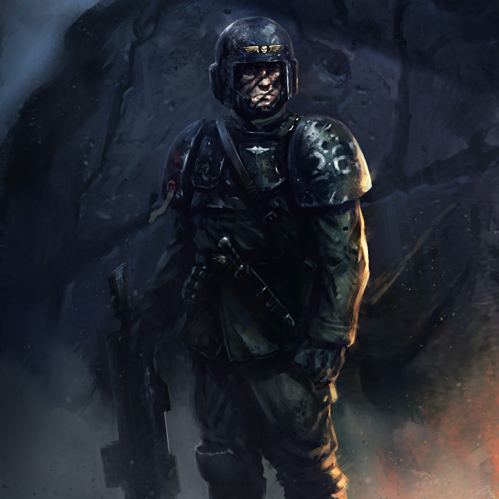
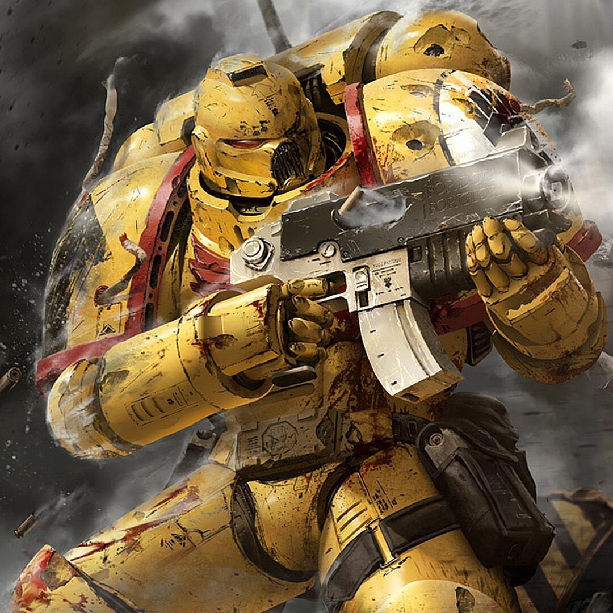

Imperium of Man!

The Imperium of Man, also occasionally called the Imperium of Mankind and simply the Imperium, is the galactic empire under which the majority of humanity is united.
The founder and nominal ruler of the Imperium is the god-like Emperor of Mankind, the most powerful human psyker ever known. The Imperium is the largest and most powerful political entity in the galaxy, consisting of at least a million worlds which are dispersed across most of the galaxy. An Imperial planet might be separated from its closest neighbour by hundreds or thousands of light years. As a stellar empire, the size of the Imperium cannot be measured in terms of contiguous territory, but only in the number of planetary systems in its control.
The Imperium controls countless worlds, somewhere between a million, millions, a billion or even billions in total. The overall number of planets has never been exactly determined, entire departments of the Administratum are devoted to cataloguing every controlled world, a task without end, due to the constantly changing nature of the domain.
New planets are constantly discovered, conquered or colonised while old ones are lost The Imperium also controls untold millions of stars.
Several aliens and forces - Chaos, Tyranids, Eldar, Dark Eldar, Orks, Tau, Necrons - challenge the supremacy of the Imperium. From within, the Imperium is threatened more insidiously by rebellion, mutation, rogue psykers, and subversive cults. Without the protection of the Imperium, mankind would fall prey to the countless perils that threaten it
Contents
Astra Militarum
Astra Militarum
The Astra Militarum, also known as the Imperial Guard in colloquial Low Gothic, is the largest coherent fighting force in the galaxy and serves as the Imperium of Man's primary military force and first line of defence from the myriad threats which endanger the existence of the Human race in the 41st Millennium.
It is comprised of countless billions of men and women -- hundreds of thousands of different regiments, supported by a vast array of light and heavy armoured vehicles that provide the Imperial Guard's primary offensive punch. The Astra Militarum is usually the first Imperial force to respond to a threat if a world's Planetary Defence Force (PDF) fails to suppress it.
They also garrison major locations of strategic or cultural interest to the Imperium and are often found in defensive roles. Supported by legions of heavy armour and thundering artillery, the Imperial Guard fight a never-ending war for the survival of Mankind in an unrelentingly hostile universe.
The primary combat tactic of the Astra Militarum is to overwhelm the enemy with their endless numbers, while at the same time hammer them into submission with devastating artillery and crush them with powerful main battle tanks. As a result, the Astra Militarum is often referred to as the "Hammer of the Emperor" -- the sheer amount of force that the Imperial Guard can bring to bear on the enemy is devastating, but is not as direct or as precise as their Space Marine allies in the Adeptus Astartes, who are described as the "Scalpel of the Emperor" and specialise in planetary assaults, special operations and decapitation strikes.
There is no universal uniform or regimental command hierarchy in the Astra Militarum, although it is compulsory for every regiment to have at least one commissar to maintain the discipline and morale of the troops while watching for any signs of corruption or heretical taint in the ranks. However, it is worth noting that a number of worlds copy the uniform and equipment used by the regiments of the Cadian Shock Troops, who are viewed as being the most effective of the Astra Militarum's infantry units.
The origins of the Astra Militarum date back to the Great Crusade of the late 30th Millennium, when the Emperor of Mankind conquered the stars and forged the Imperium of Man. On the front line of this mission of expansion and reclamation were the Space Marine Legions -- the Adeptus Astartes -- the finest warriors Humanity had ever created, each the equal of a dozen normal men.
Despite their formidable battle prowess, the forces of the Space Marines were not limitless, and the relentless demands of building a galactic empire pushed the Legions further apart. Separated by countless thousands of light years, their presence became ever more scattered and dilute.
The Emperor required more manpower to ensure the momentum of the Great Crusade did not falter, and so the Imperial Army was created, known in High Gothic as the Imperialis Auxilia.
The Imperial Army was a vital part of the expedition fleets sent out to claim the stars in the Emperor's name. Gargantuan numbers of brave troops -- millions growing to billions of troops, ranks of armoured battle tanks and mighty armadas of capital-class starships that were a part of the Imperial Army's subsidary Armada Imperialis -- were raised, all subordinate to the Legiones Astartes.
At first, the Imperial Army was employed for garrison duties and to mop up resistance in the wake of the Legions' initial assaults, utilised where the back of an enemy was broken and Compliance to the Imperium required only a watchful presence.
Eventually, certainly by the time the Great Crusade reached the Eastern Fringe of the galaxy, the troops and starships of the Imperial Army were deployed at its forefront, fighting alongside the power-armoured super-soldiers of the Legiones Astartes. But everything changed when the galaxy was ripped asunder by the treachery of the Warmaster Horus, triggering a cataclysmic interstellar civil war that engulfed the newly-founded Imperium.
In the aftermath of this so-called Horus Heresy, the organisational structure of the forces of the Imperium were revised significantly. To prevent the possibility of large-scale rebellion occurring again within the Imperial armed forces, the titanic armies of the Imperium were divided.
The nine remaining Loyalist Space Marine Legions were split into Chapters. The Imperial Army, as it was, ceased to exist. The link between fleet and army was severed; never again would ground commanders be given direct control over interstellar warships. From its ashes were born the Imperial Navy and the Imperial Guard -- known officially as the Astra Militarum.
The Astra Militarum was reorganised into planetary-sized units known as "Militarum Regimentos," which in turn were divided into smaller regiments. Commissars of the Officio Prefectus, based on the Imperial Army's former "masters of discipline," were introduced to ensure loyalty and discipline.
The interdependence of the newly formed Astra Militarum with the now-separate Imperial Navy ensured that, should a regiment turn against their oaths to the Emperor, they would not be able to spread their treachery beyond a single world, and should a Navy fleet mutiny then they would not have the ability to re-supply or deploy ground troops.
The Imperium had learnt a painful lesson from the dark days of the Horus Heresy, one its rulers were determined never to repeat in the grim days to come.
Space Marines
Space Marines
The Space Marines or Adeptus Astartes are foremost amongst the defenders of Humanity, the greatest of the Emperor of Mankind's warriors. They are barely Human at all, but superhuman; having been made superior in all respects to a normal man by a harsh regime of genetic modification, psycho-conditioning and rigorous training.
Space Marines are untouched by plague or any natural disease and can suffer wounds that would kill a lesser being several times over, and live to fight again. Clad in ancient power armour and wielding the most potent weapons known to man, the Space Marines are terrifying foes and their devotion to the Emperor and the Imperium of Man is unyielding. They are the God-Emperor's Angels of Death, and they know no fear.
The Astartes are physically stronger, far more resilient and often mentally far removed from the lot of most normal Human beings. In the presence of the Astartes, most people feel a combination of awe and fear, and many cultures on the more primitive worlds simply worship them outright as demigods or angels of the God-Emperor made flesh.
They should feel so, for many Space Marines feel little compassion for those they have sometimes termed "mortals" in comparison to themselves, seeing the very people they were created to protect as little more than obstacles to a more efficient eradication of the Imperium's enemies.
Chapters
This is an attitude sometimes taken by whole Chapters. They see normal Humans as frail, weak creatures given to the follies of temptation, avarice, greed, lust and cowardice -- all emotions they rarely feel, if ever.
Yet there are some Astartes who remember why they were created by the Emperor, who avoid the trap of hubris which the Space Marines are so prone to and which has seduced so many of their number to serve the Ruinous Powers of Chaos. They are the final guardians of Mankind, the saviours of last resort.
They were intended not to lead Humanity, but to defend it, sometimes even from itself. At the heart of that mission lies the limitless compassion the Emperor extended to every man and woman in the galaxy when He willingly chose to condemn Himself to more than 10,000 years of imprisonment within a dying prison of flesh for their sake.
Some Astartes sneer at compassion, seeing it as one more Human weakness that has been purged from their superior transhuman bodies and minds. But the wisest of the Space Marines know that in the end, compassion is their only salvation.
Potential Space Marines are usually, but not always, recruited from the worlds where a Chapter has established its fortress-monastery, although some Chapters are known to recruit from a collection of different worlds in an area of space that they protect or frequent.
Recruiting methods vary from Chapter to Chapter. Some select their neophytes from feral tribes roaming the surface of inhospitable worlds, while others draw upon eager volunteers who have been groomed from birth to become an Astartes.
Still others watch and kidnap potential warriors, turning them into Astartes whether they will it or not. Whatever the method, all Space Marine Chapters will only accept those who successfully pass the grueling initiation trials and prove themselves worthy of becoming a Space Marine.
However a man becomes a Space Marine does not matter: once his body has been forged into that of a transhuman Astartes, he must forever stand apart from the people to whom he was once kin and who he is now sworn to protect. Once a man becomes a Space Marine, he is no longer mortal; his genetic heritage is now that of the Emperor Himself, and a spark of the same divine majesty flows in his veins.
There are approximately 1,000 Space Marine Chapters active in the Imperium of Man at any one time. Since the opening of the Great Rift in the Era Indomitus, these Chapters have been comprised of a mixture of traditional Firstborn Space Marines and the even more enhanced Primaris Space Marines, or may contain only Primaris Marines.
A list of the most notable and well-known Chapters in the Imperium can be found here. This number has stayed relatively constant since the Second Founding in the 31st Millennium following the Horus Heresy when the First Founding Space Marine Legions were broken up.
However, the exact population of Astartes in the galaxy remains far from exact and may fluctuate widely depending on the time period and the circumstances confronting the Imperium.
Adeptus Mechanicus
Adeptus Mechanicus

The Adeptus Mechanicus is the official Imperial name within the Adeptus Terra for the Cult Mechanicus or Cult of the Machine based on Mars which provides the Imperium with its scientists, engineers and technicians.
The tech-adepts of the Mechanicus are the primary keepers of what is viewed as sacred wisdom, a privileged caste of Tech-priests who jealously guard the knowledge required to maintain and construct much of the Imperium's advanced technology.
In ancient times, before the current Age of the Imperium officially began following the end of the Horus Heresy, the Adeptus Mechanicus was instead called the Mechanicum. The Adeptus Mechanicus was formally separated from the larger Mechanicum of Mars by order of the Council of Terra in 012.M31. This occurred after the Red Planet had fallen to the control of the Hereteks who represented the Traitor faction of the Mechanicum loyal to the Warmaster Horus later called the "Dark Mechanicum."
The Mechanicus acknowledge the Emperor of Mankind as the ruler of the Imperium of Man, but not the religious truth of the Imperial Cult or the Ecclesiarchy, and are granted an unusual amount of political and religious autonomy within the Imperium's structure, a role protected by the ancient Treaty of Mars. The Mechanicus essentially maintains an empire-within-an-empire in Imperial space, and its interests usually, but not always, coincide with those of the wider Imperium.
Instead of the Imperial Creed, the servants of the Mechanicus follow their own dark and mysterious scriptures and worship the strange deity they call the Machine God or the "Omnissiah."
As part of this faith, the Adeptus Mechanicus believes knowledge is the true manifestation of divinity in the universe, and all creatures and artefacts that embody knowledge are holy because of it. The Emperor is the supreme object of worship for the servants of the Mechanicus, for He is the living avatar of the Machine God that is the Omnissiah.
The Emperor was recognised by the ancient Mechanicum as the fulfillment of the prophecy of the coming of the Omnissiah because He comprehends so much, and understands more about the true nature of reality than any other being in existence.
The Tech-priests of the Adeptus Mechanicus also regard organic flesh as weak and view the removal and replacement of biological tissue with mechanical, bionic parts as sacred. Most elder Tech-priests have few organic parts left and eventually become more machine than man.
The Adeptus Mechanicus is based on Mars, the very first Forge World of the Imperium, and they are the sole rulers of the Red Planet. They provide the technical and scientific experts of the Imperium and field armies of massive Titans, Questor Mechanicus Knights, Electro-priests, Skitarii and Combat Servitors.